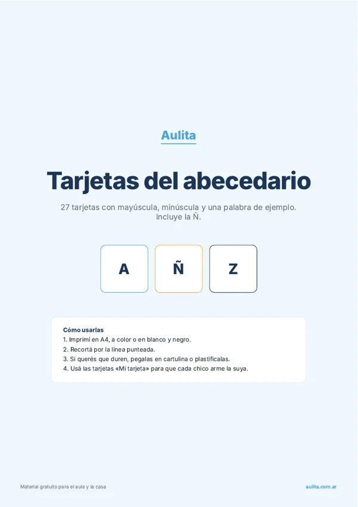
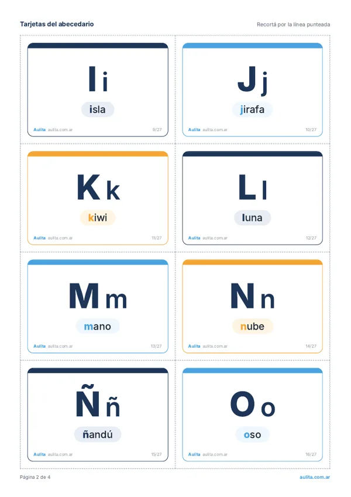

Inicio › Tarjetas educativas › Abecedario
Tarjetas del abecedario para imprimir
PDF gratis con las 27 letras del abecedario en español, incluida la Ñ. Cada tarjeta tiene la letra en mayúscula y minúscula y una palabra de ejemplo. Son 8 tarjetas por hoja A4, con línea de corte y 5 tarjetas en blanco para completar.
Sin registro. Se imprime bien en blanco y negro.



Qué palabras trae
Cómo usarlas en el aula
- Friso del abecedario: pegalas en fila arriba del pizarrón para que estén siempre a la vista.
- ¿Con qué letra empieza? Mostrá una tarjeta, tapá la palabra y que digan otras palabras con esa letra.
- Ordenar el abecedario: repartí las tarjetas mezcladas y armen la fila de la A a la Z en el piso.
- Mi tarjeta: cada chico completa una en blanco con la letra de su nombre y un dibujo.
Preguntas frecuentes
¿Cuántas letras tiene el abecedario en español?
27 letras: las 26 del alfabeto latino más la Ñ. La CH y la LL son dígrafos, no letras, según la Real Academia Española desde 2010.
¿Se pueden imprimir en blanco y negro?
Sí. Las letras están en azul oscuro y los colores son suaves, así que se leen bien en una impresora común.
¿Sirven como flashcards del abecedario en español?
Sí, son lo mismo: tarjetas para mostrar y repasar. Están en español rioplatense, con palabras como ñandú y yacaré.
¿Conviene empezar con mayúscula o minúscula?
En primer grado se suele empezar con imprenta mayúscula. Por eso cada tarjeta trae las dos: la mayúscula grande y la minúscula al lado.